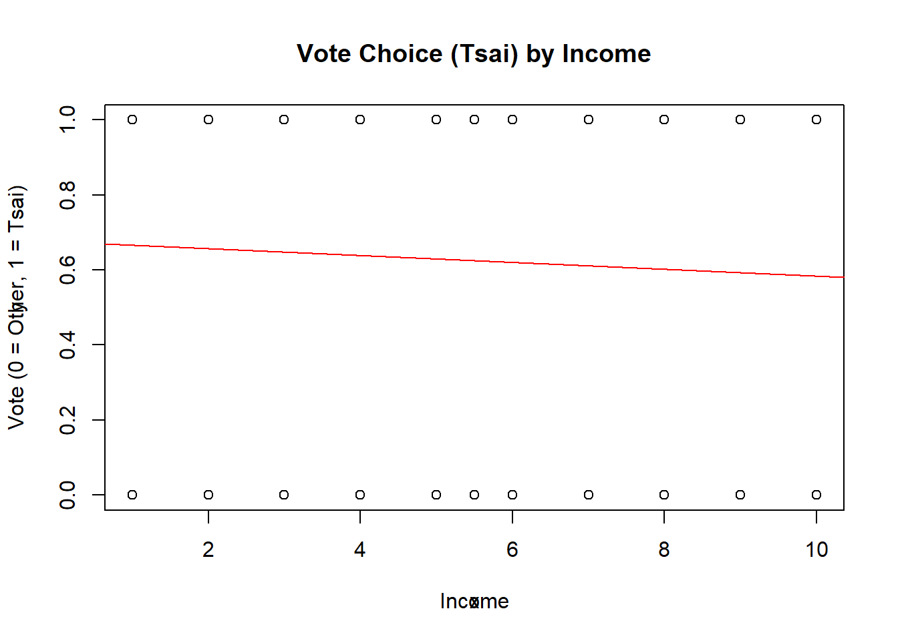
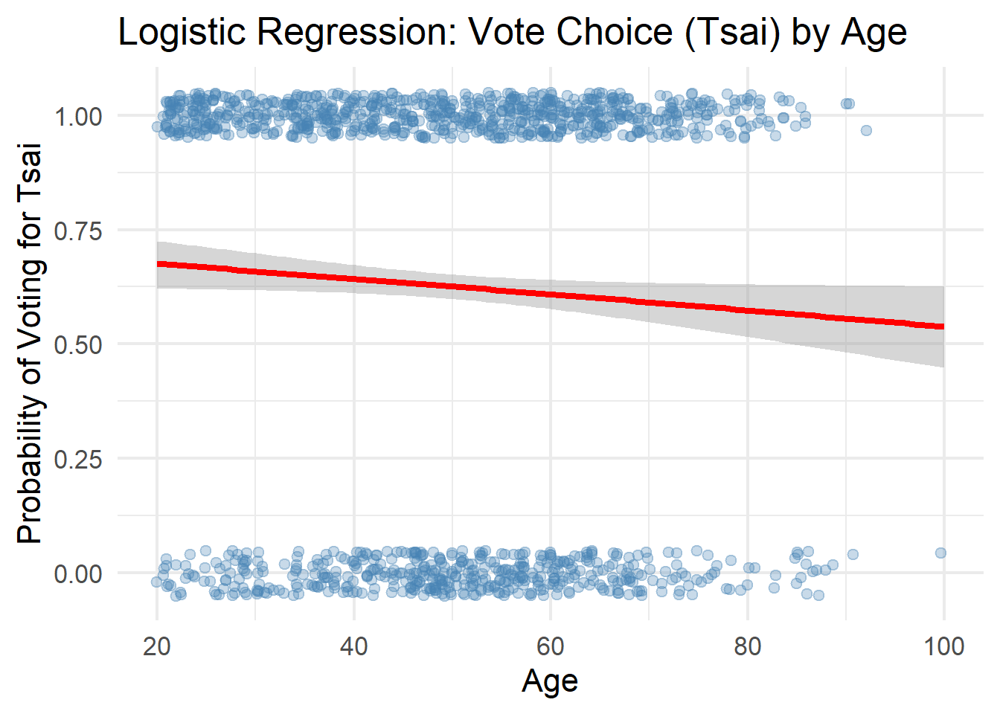
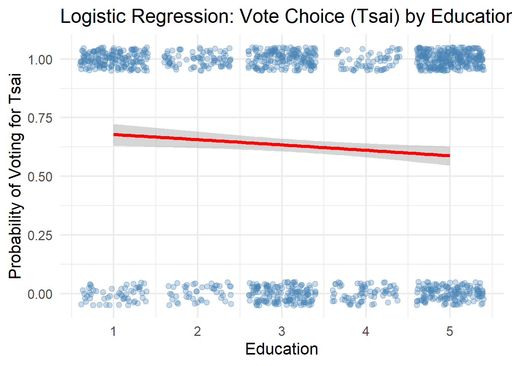
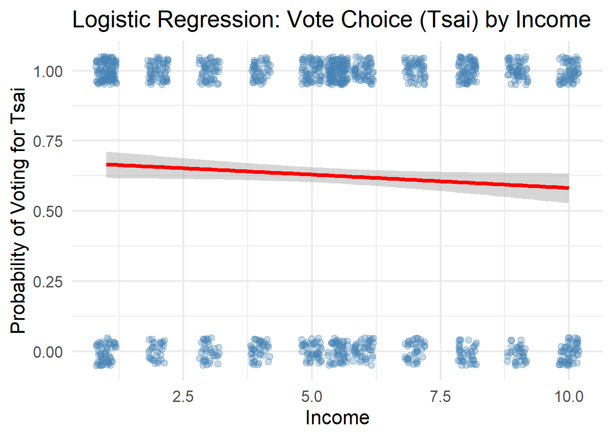

Code
library(haven)
library(tidyverse)Muhammad Al Hasib
Using votetsai as the dependent variable and age, edu, and income as predictors.
Call:
lm(formula = votetsai ~ age + edu + income, data = TEDS_2016)
Residuals:
Min 1Q Median 3Q Max
-0.8095 -0.5806 0.3123 0.3751 0.6035
Coefficients:
Estimate Std. Error t value Pr(>|t|)
(Intercept) 1.085494 0.085071 12.760 < 2e-16 ***
age -0.005045 0.001058 -4.766 2.10e-06 ***
edu -0.055280 0.012286 -4.499 7.45e-06 ***
income -0.004692 0.005155 -0.910 0.363
---
Signif. codes: 0 '***' 0.001 '**' 0.01 '*' 0.05 '.' 0.1 ' ' 1
Residual standard error: 0.4789 on 1253 degrees of freedom
(433 observations deleted due to missingness)
Multiple R-squared: 0.02362, Adjusted R-squared: 0.02128
F-statistic: 10.1 on 3 and 1253 DF, p-value: 1.407e-06regplot FunctionCreating a function that combines lm(), plot(), and abline() to plot a regression fit line.
regplot on the Dependent Variable
The problem is that the dependent variable votetsai is binary (0 = voted for other candidate, 1 = voted for Tsai Ing-wen). Linear regression assumes the outcome is continuous, so applying it to a binary variable produces several issues:
Since the dependent variable is binary, logistic regression is the appropriate model. It models the log-odds of the outcome and constrains all predictions between 0 and 1.
Call:
glm(formula = votetsai ~ age + edu + income, family = binomial,
data = TEDS_2016)
Coefficients:
Estimate Std. Error z value Pr(>|z|)
(Intercept) 2.508583 0.379569 6.609 3.87e-11 ***
age -0.021731 0.004656 -4.668 3.05e-06 ***
edu -0.238448 0.054069 -4.410 1.03e-05 ***
income -0.020470 0.022460 -0.911 0.362
---
Signif. codes: 0 '***' 0.001 '**' 0.01 '*' 0.05 '.' 0.1 ' ' 1
(Dispersion parameter for binomial family taken to be 1)
Null deviance: 1661.8 on 1256 degrees of freedom
Residual deviance: 1632.0 on 1253 degrees of freedom
(433 observations deleted due to missingness)
AIC: 1640
Number of Fisher Scoring iterations: 4ggplot(TEDS_2016_clean, aes(x = age, y = votetsai)) +
geom_jitter(height = 0.05, alpha = 0.3, color = "steelblue") +
geom_smooth(method = "glm",
method.args = list(family = binomial),
se = TRUE,
color = "red") +
labs(title = "Logistic Regression: Vote Choice (Tsai) by Age",
x = "Age", y = "Probability of Voting for Tsai") +
theme_minimal(base_size = 16)
ggplot(TEDS_2016_clean, aes(x = edu, y = votetsai)) +
geom_jitter(height = 0.05, alpha = 0.3, color = "steelblue") +
geom_smooth(method = "glm",
method.args = list(family = binomial),
se = TRUE,
color = "red") +
labs(title = "Logistic Regression: Vote Choice (Tsai) by Education",
x = "Education", y = "Probability of Voting for Tsai") +
theme_minimal(base_size = 16)
ggplot(TEDS_2016_clean, aes(x = income, y = votetsai)) +
geom_jitter(height = 0.05, alpha = 0.3, color = "steelblue") +
geom_smooth(method = "glm",
method.args = list(family = binomial),
se = TRUE,
color = "red") +
labs(title = "Logistic Regression: Vote Choice (Tsai) by Income",
x = "Income", y = "Probability of Voting for Tsai") +
theme_minimal(base_size = 16)